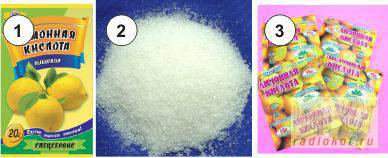

В этой статье рассказывается способ травления меди перекисью водорода в присутствии лимонной кислоты.

Рис. 5
1 - 20ти грамововая упаковка;
2 - россыпь лимонной кислоты;
3 - 15ти граммовые упаковки.
Анализ двух предыдущих методов (см. п.3 и п.4) привёл меня к выводу, что природа кислоты, используемой совместно с перекисью водорода, имеет малосущественное значение, и будет оказывать влияние только на скорость травления меди. Это значит, что можно использовать любую походящую кислоту, которая не окисляется перекисью водорода, например (роюсь в кухонном шкафчике) лимонную, ну или уксусную – но отставим пока уксус из-за неприятного запаха.
Выбор лимонной кислоты вызван тем, что она: доступна, имеет достаточную силу и не пахнет. Более того, лимонная кислота образует прочнейший комплекс с медью, что исключает всякое влияние продуктов реакции на её скорость! А для ускорения процесса следует добавить не расходующийся хлорид натрия.
А сейчас - уравнения...
Суммарная реакция:
Cu+ H3Cit +H2O2→ H[CuCit] +2H2O
электрохимия:
первая реакция
Cu +Cit3-→ [CuCit]-+2e -0,083 В (14)
Cit – здесь означает остаток лимонной кислоты [(CH2)2C(OH)(COO)3]
Это значение ОВП своим минусом показывает, что медь должна растворяется в лимонной кислоте с выделением водорода, уходя в комплекс.
вторая реакция
H2O2+2e+2H+ → 2H2O +1,67 В (15)
Если сравнить с уравнением (12) то ОВП (рассчитанный по формуле) - ниже, из-за того что при использовании лимонной кислоты кислотность раствора, снижается по сравнению с соляной (Снижение окислительного потенциала перекиси водорода вследствие не очень высокой силы лимонной кислоты.)
Однако движущая сила процесса, внимание: 1,775 В, что является абсолютным рекордом!
Достоинства
Недостатки, куда же без них.
Рекомендуемый способ приготовления травильного раствора:
В 100 мл аптечной 3% перекиси водорода растворяется 30 г лимонной кислоты и 5 г поваренной соли. Этого раствора должно хватить для травления 100 см2 меди, толщиной 35мкм.
Соль при подготовке раствора можно не жалеть. Так как она играет роль катализатора, то в процессе травления практически не расходуется. Перекись 3% не стоит разбавлять дополнительно т.к. при добавлении остальных ингредиентов её концентрация снижается.
Чем больше будет добавлено перекиси водорода (гидроперита) тем быстрее пойдёт процесс, но не переусердствуйте - раствор не хранится, т.е. повторно не используется, а значит и гидроперит будет просто перерасходован. Избыток перекиси легко определить по обильному «пузырению» во время травления.
Однако добавление лимонной кислоты и перекиси вполне допустимо, но рациональнее приготовить свежий раствор.
Вы можете использовать вместо лимонной и уксусную кислоту, но неприятный запах и меньшая скорость травления могут вас не устроить. ОВП реакции с уксусной кислотой 1,35В – что в принципе не так уж и мало, например в сравнении с ХЖ.
Напомню для тех кто только начинает:
- для приготовления всех травильных растворов необходимо использовать пластиковую либо стеклянную посуду.
- подогрев растворов следует проводить на водяной бане или специально предназначенными приспособлениями.
- все растворы полученные после травления ядовиты из-за высокого содержания меди.
- соблюдайте технику безопасности при работе с сильными кислотами.
- утилизация отработанных растворов допустима путём выливания в общую канализацию.
- после травления плату следует ополоснуть слабым раствором уксуса и тёплой водой.